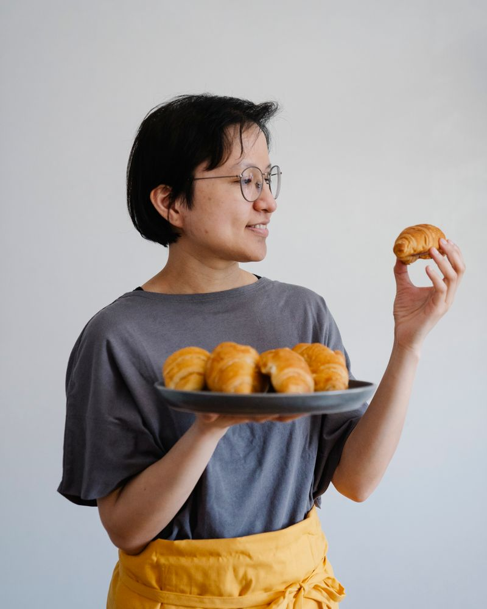

Fig & Filter opened two years ago in what used to be a picture-framing shop on Chalk Lane. Mara and Dev had spent a decade working in other people's cafés — Mara running kitchens, Dev on the roaster — and kept meeting over the same complaint: the coffee was getting better everywhere, but the food was an afterthought, or the food was lovely and the coffee was burnt. So they opened the place where neither side is the afterthought.
The name comes from the fig tree in the courtyard out back, which predates the café, the framing shop, and possibly the street. In summer it ends up in the scones, the lemonade, and occasionally the filter roast notes.

Mara Osei — kitchen
Mara ran hotel breakfast kitchens for eight years and has strong opinions about butter. She writes the menu seasonally, bakes the first tray of croissants at 5:40 every morning, and believes a café is judged by its soup.

Dev Nair — coffee
Dev roasts twice a week on the 5kg machine behind the counter and will talk about extraction for exactly as long as you let him. He buys from three small farms he can name from memory, and changes the filter roast weekly so the regulars never get bored.
The roasting note
We roast in small batches on Tuesdays and Fridays. Espresso rests four days before we serve it; filter rests seven. If you buy beans at the counter, Dev will grind them for whatever you brew with at home — and he'll write the roast date on the bag, because it matters.